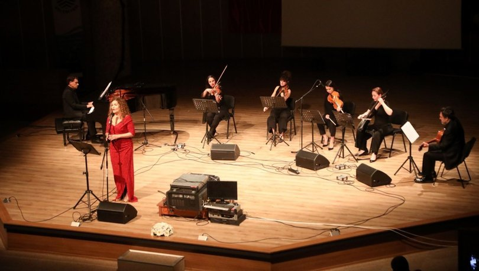

Edebiyat Dünyası Güncel Haberler
Şiirleri 50'den fazla dile çevrilen şair Nâzım Hikmet Ran'ın
doğumunun
120'nci yılı,Bodrum Belediyesi'nin düzenlediği etkinliklerle kutlandı.
Lewis Carroll'un "Alice Harikalar Diyarı'nda" macerasının devamı niteliğindeki
"Aynanın İçinden" kitabı, deneyimli gazeteci ve çevirmen
Hüseyin Gündoğdu'nun
yeni çevirisiyle İş Bankası Kültür Yayınları'ndan çıktı.